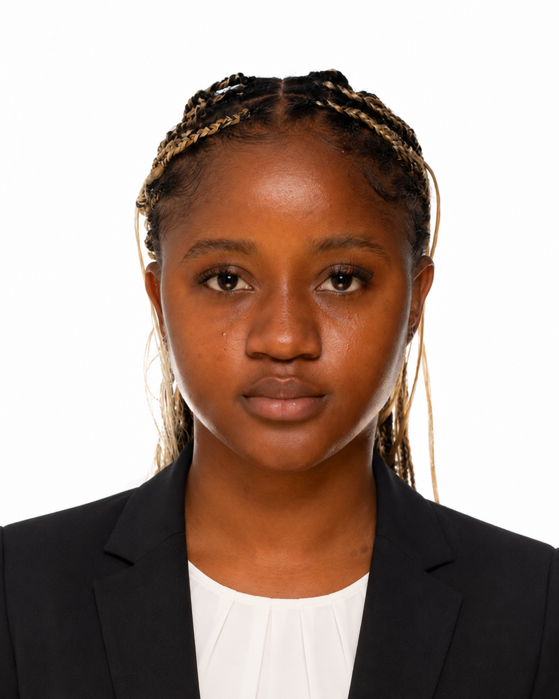

Programmierung
- Python
- Programmiersprache C
- Algorithmik
- Datenstrukturen - Grundlagen
- Logik und Problemlösung
Hallo, ich bin
Begeistert von der Entwicklung digitaler Lösungen, Programmierung und der Gestaltung funktionaler Benutzeroberflächen. Ich verbinde technisches Denken mit Kreativität und setze Projekte mit Python, C, Webtechnologien und Datenbanken um.

Durch meinen dreisprachigen Hintergrund in Französisch, Deutsch und Englisch kann ich mich leicht an verschiedene Umgebungen anpassen, mit unterschiedlichen Zielgruppen kommunizieren und an internationalen Projekten mitarbeiten.
Als Informatikstudentin in einem deutsch-französischen Studiengang entwickle ich ein vielseitiges technisches Profil mit Schwerpunkten in Programmierung, Algorithmik, Datenstrukturen, Datenbanken und Webentwicklung. UI/UX-Design ergänzt mein Profil durch ein gutes Verständnis für nutzerfreundliche digitale Produkte.
Mein akademischer Werdegang.
Seit September 2025
DFHI-ISFATES
Deutsch-französische Ausbildung mit Fokus auf Programmierung, Algorithmik, Datenstrukturen, Softwaretechnik und Datenbanken, ergänzt durch Webentwicklung und UI/UX-Design.
2022 - 2023
Collège Mgr FX-Vogt, Kamerun
Schwerpunkte: Mathematik, Physik-Chemie und Informatik. Naturwissenschaftliche Ausbildung mit einer soliden Grundlage in logischem Denken, Analyse und Problemlösung.
Einige akademische und persönliche Projekte.
Technologie: Python
Entwicklung eines Spiels in Python mit Implementierung von Kontrollstrukturen, Schleifen, Bedingungen, Benutzerinteraktionen und algorithmischer Logik.
Tools: MERISE-Modellierung, Microsoft Access, SQL
Konzeption einer relationalen Datenbank für eine Mediathek: Entitätsmodellierung, Erstellung von Tabellen und Beziehungen sowie Umsetzung von Formularen und SQL-Abfragen.
Technologien: WordPress, Elementor
Erstellung einer Bildungswebsite mit klarer Informationsstruktur, Fortschrittssystem und nutzerorientierter Navigation.
Technologien: HTML, SCSS, Bootstrap, GitHub
Erstellung eines responsiven digitalen Lebenslaufs auf GitHub, mit einer klaren Struktur, modernem Design und einer Organisation, die zu meinem Profil passt.
Technologien: HTML, CSS
Erstellung einer responsiven Präsentationswebsite mit strukturierter HTML-Seite, CSS-Layout und visueller Gestaltung.
Tool: Figma
Neugestaltung einer Benutzeroberfläche mit Fokus auf Ergonomie, Produktpräsentation, Navigationslogik und Benutzererfahrung.
2026
Griechenland
Teilnahme an einem internationalen akademischen Programm im Bereich künstliche Intelligenz und Robotik. Einführung in KI-Anwendungen, Robotik-Grundlagen und technische Projektarbeit in einem multikulturellen Umfeld.
2026
Austausch mit IT-Fachleuten
Einblick in das technologische Umfeld eines großen Industrieunternehmens. Austausch mit Informatikern über digitale Berufe, in Unternehmen verwendete Systeme, IT-Prozesse und konkrete Anwendungen der Informatik.
2025 - 2026
DFHI-ISFATES
Durchführung mehrerer akademischer Projekte in Programmierung, Algorithmik, Datenbanken und Webentwicklung, mit praktischer Anwendung der im Unterricht behandelten Informatik-Konzepte.
Zeichnen
Reisen
Musik
Content-Erstellung
Sie können mich für Werkstudentenstellen, technische Projekte oder einen Austausch über Informatik, Softwareentwicklung, Webentwicklung und digitale Lösungen kontaktieren.